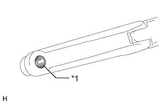
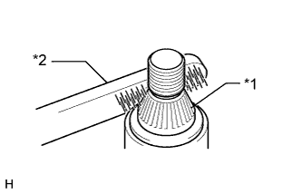
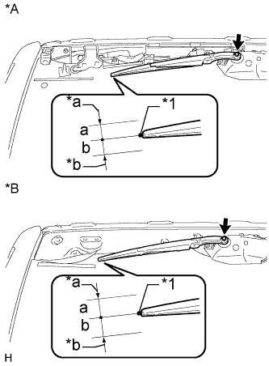

ЭЛЕКТРОДВИГАТЕЛЬ ЗАДНЕГО СТЕКЛООЧИСТИТЕЛЯ > УСТАНОВКА |
| 1. УСТАНОВИТЕ ЭЛЕКТРОДВИГАТЕЛЬ ЗАДНЕГО СТЕКЛООЧИСТИТЕЛЯ В СБОРЕ |
Введите в зацепление 2 направляющих, временно установите электродвигатель заднего стеклоочистителя в сборе и закрепите его 3 болтами.
Затяните 3 болта.
Подсоедините разъем.
| 2. УСТАНОВИТЕ РЫЧАГ ЗАДНЕГО СТЕКЛООЧИСТИТЕЛЯ |
|  |
Очистите зубчатую часть рычага стеклоочистителя.
| *1 | Зубчатое соединение оси вращения стеклоочистителя |
|  |
Почистите зубчатую часть оси вращения стеклоочистителя проволочной щеткой.
| *1 | Зубчатая часть оси вращения стеклоочистителя |
| *2 | Проволочная щетка |
Включите задний стеклоочиститель и остановите электродвигатель заднего стеклоочистителя в положении автоматическтого ограничителя хода.
|  |
Совместите край лопасти с отметкой на стекле, как показано на рисунке.
| Область | Нормальное состояние |
| a | 10,0 мм (0,394 дюйма) |
| b | 10,0 мм (0,394 дюйма) |
| *A | для моделей без кронштейна запасного колеса на двери багажного отделения |
| *B | для моделей с кронштейном запасного колеса на двери багажного отделения |
| *1 | Керамическая метка |
| *a | Верхняя граница |
| *b | Нижняя граница |
Установите рычаг и щетку левого заднего стеклоочистителя и закрепите их гайкой.
| 3. УСТАНОВИТЕ ФОРСУНКУ ЗАДНЕГО СТЕКЛООМЫВАТЕЛЯ В СБОРЕ |
Введите в зацепление 2 захвата и установите форсунку омывателя.
Подсоедините шланг.
| 4. УСТАНОВИТЕ ЗАДНИЙ СПОЙЛЕР В СБОРЕ |
Для моделей без кронштейна запасного колеса на двери багажного отделения:
Установите задний спойлер в сборе (Нажмите здесь).
Для моделей с кронштейном запасного колеса на двери багажного отделения:
Установите задний спойлер в сборе (Нажмите здесь).
| 5. УСТАНОВИТЕ ПРАВУЮ ПАНЕЛЬ ЗАДНЕГО СПОЙЛЕРА |
Введите в зацепление 2 фиксатора, чтобы установить панель заднего спойлера.
| 6. УСТАНОВИТЕ ПАНЕЛЬ ЗАДНЕГО СПОЙЛЕРА № 1 (для моделей без кронштейна запасного колеса на двери багажного отделения) |
Закрепите 5 фиксаторов и крепежную ленту, чтобы установить задний спойлер № 1.
| 7. УСТАНОВИТЕ ЛЕВУЮ БОКОВУЮ ОБЛИЦОВКУ ДВЕРИ БАГАЖНОГО ОТДЕЛЕНИЯ (для моделей с кронштейном запасного колеса на двери багажного отделения) |
Установите боковую облицовку двери багажного отделения, закрепив ее 2 фиксаторами.
| 8. УСТАНОВИТЕ ПРАВУЮ БОКОВУЮ ОБЛИЦОВКУ ДВЕРИ БАГАЖНОГО ОТДЕЛЕНИЯ (для моделей с кронштейном запасного колеса на двери багажного отделения) |
Установите боковую облицовку двери багажного отделения, закрепив ее 2 фиксаторами.
| 9. УСТАНОВИТЕ ЦЕНТРАЛЬНУЮ ОБЛИЦОВКУ ДВЕРИ БАГАЖНОГО ОТДЕЛЕНИЯ (для моделей с кронштейном запасного колеса на двери багажного отделения) |
Введите в зацепление 4 фиксатора и установите центральную облицовку двери багажного отделения.